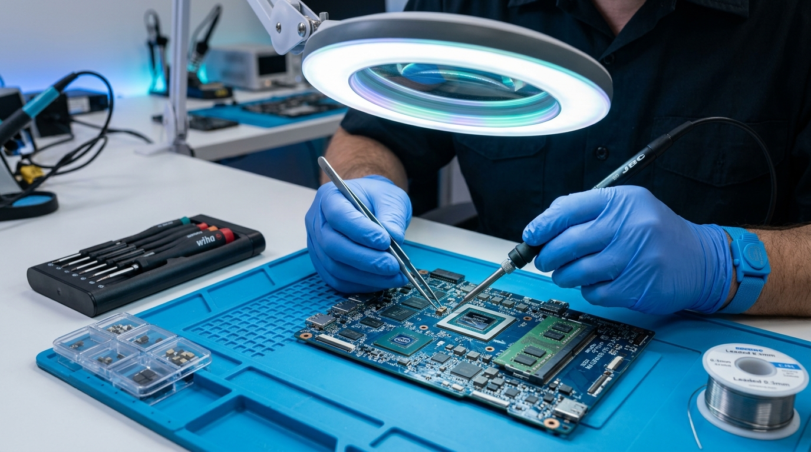
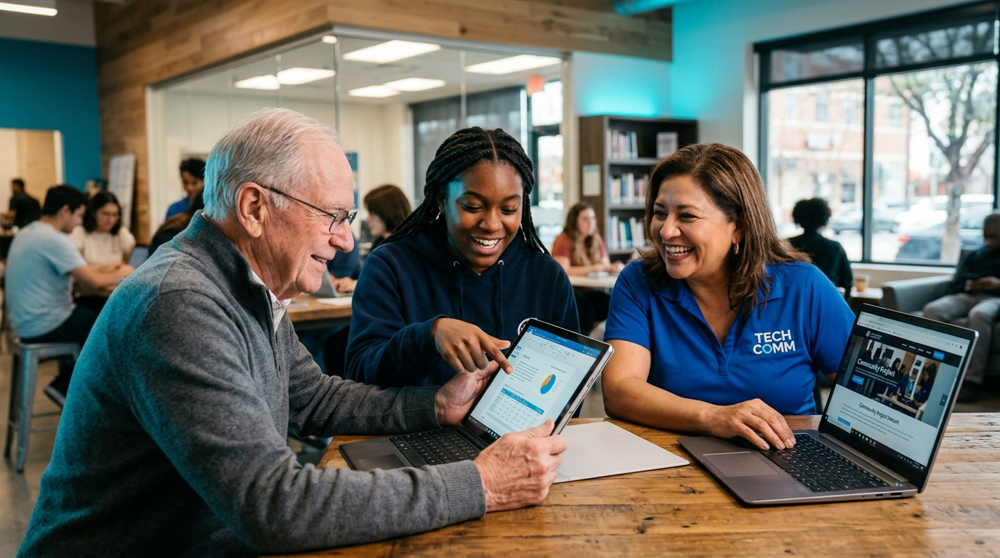

Educación
Las plataformas digitales permiten investigar, aprender nuevas habilidades y terminar estudios sin limitaciones de distancia.
Acceso escolar
Servicios técnicos económicos, mantenimiento garantizado y capacitación digital práctica. Acercamos herramientas y soluciones reales a familias, estudiantes y emprendedores que desean progresar en el mundo digital.
Nacimos con la convicción de que nadie debería quedarse al margen del progreso por falta de recursos o acompañamiento técnico.
MicroTech es una iniciativa enfocada en brindar servicios tecnológicos accesibles y de calidad para familias, personas independientes y microempresas locales que encuentran dificultades para reparar sus dispositivos o aprender a utilizarlos.
Nuestro propósito es acercar herramientas prácticas, mantenimiento honesto y conocimientos útiles a quienes más los necesitan, resolviendo problemas cotidianos y abriendo nuevas oportunidades laborales y educativas.
Explicamos cada problema en palabras sencillas para que siempre tengas el control.
Precios diseñados para la realidad económica de nuestros barrios y comunidades.
Te enseñamos a cuidar tus equipos y aprovechar la tecnología para tu propio beneficio.
La tecnología es hoy el puente fundamental para estudiar, trabajar y comunicarse. Sin embargo, miles de personas carecen del acceso y el apoyo necesario para aprovecharla.
Las plataformas digitales permiten investigar, aprender nuevas habilidades y terminar estudios sin limitaciones de distancia.
Desde buscar empleo hasta gestionar pequeños negocios, los medios digitales aumentan los ingresos y la estabilidad.
Trámites gubernamentales, salud, banca móvil y contacto diario con familiares requieren equipos en óptimo estado.
Los altos costos de reparación y la falta de orientación dejan a comunidades y personas vulnerables en desventaja.
Transformamos los obstáculos más frecuentes en soluciones directas y asequibles.
Muchos talleres cobran tarifas inaccesibles o generan presupuestos opacos para arreglar computadores o celulares indispensables.
Adultos mayores y personas sin formación previa sienten temor a equivocarse o a ser víctimas de estafas en línea.
Tiendas y emprendedores pierden ventas por no saber recibir pagos electrónicos o promocionarse en WhatsApp.
Combinamos soporte técnico experto, pedagogía comprensible y asesoría comercial para impulsar tu vida digital.

MantenimientoRecupera la velocidad y el funcionamiento de tus dispositivos sin gastar en equipos nuevos. Soluciones preventivas y correctivas a tu alcance.
Talleres personalizados y grupales con explicaciones claras para que niños, adultos y personas mayores aprendan sin miedo.
Apoyamos a pequeños comerciantes y artesanos a dar el salto digital con herramientas simples y de bajo costo.
MicroTech elimina las barreras económicas, técnicas y de lenguaje para que cualquier persona pueda sentirse parte del entorno digital moderno.
Nuestra diferencia radica en unir servicio técnico de calidad, pedagogía humana y asesoría práctica en un modelo cercano y orientado a la economía real.
“No vendemos tecnología innecesaria; enseñamos a sacarle el máximo provecho a la que ya tienes.”
Diagnósticos transparentes con tarifas solidarias pensadas para el presupuesto popular.
Garantía de piezas y reparación sin inventar fallas que no existen.
Metodología participativa enfocada en resolver necesidades reales del día a día.
Soluciones a la medida de los pequeños negocios para ayudarlos a crecer.

MicroTech aporta de manera directa a disminuir la brecha de desigualdad, permitiendo que personas de todas las edades descubran su potencial digital.
Así viven nuestros usuarios el impacto de una tecnología más cercana y accesible.
“Mi computador de estudio se apagaba constantemente y en otros lados me cobraban una fortuna. En MicroTech me explicaron exactamente qué era y lo arreglaron a un precio que pude pagar sin problemas.”
“Gracias a la asesoría para mi tienda de abarrotes aprendí a usar WhatsApp Business y recibir pagos con códigos QR. Mis ventas han aumentado porque ya no pierdo clientes que no tienen efectivo.”
“A mis 67 años sentía pánico de usar el celular para hacer trámites médicos. Los tutores de MicroTech tuvieron una paciencia infinita. Ahora hago videollamadas con mis nietos con total seguridad.”
Conoce cómo trabajamos, cómo solicitar diagnósticos y cómo acceder a nuestras capacitaciones comunitarias.
¿Tienes una consulta específica que no está aquí?
Escríbenos directamentePuedes escribirnos directamente a nuestro WhatsApp o utilizar el asistente al final de esta página. Te indicaremos cómo acercar tu equipo o coordinar una revisión rápida sin costo inicial de revisión oculta.
Nuestro modelo tiene un fuerte componente de impacto social. Minimizamos costos operativos innecesarios, reparamos componentes en lugar de reemplazarlos por piezas completas costosas y trabajamos con márgenes justos orientados al beneficio comunitario.
No, ninguna. Nuestras capacitaciones están diseñadas precisamente desde cero, con lenguaje cotidiano, paciencia y ejercicios prácticos adaptados a tu propio ritmo.
Sí. Para los emprendedores locales podemos coordinar visitas técnicas para configurar puntos de pago, datáfonos digitales, códigos QR e inventario directamente en su establecimiento.
Todas nuestras reparaciones cuentan con garantía directa sobre el trabajo realizado y los componentes instalados, además de recomendaciones preventivas para evitar que la falla vuelva a ocurrir.
Ponte en contacto con nuestro equipo. Responderemos tus inquietudes y te ofreceremos la mejor opción para tus equipos o negocio.
Elige tu necesidad y escribe tu consulta; te prepararemos un enlace directo para chatear de inmediato.